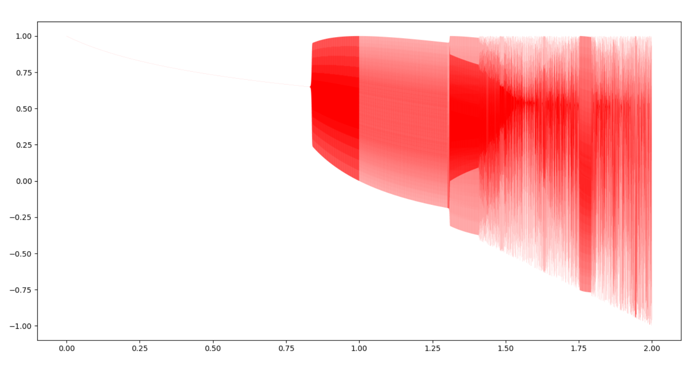

Logistic函数（逻辑斯蒂函数，Sigmoid函数）。最初来自于生态学模型，考虑细菌在培养基中的增殖，理想情况下，细菌增长速度正比细菌的数量，呈指数增长。
\[\frac{dy}{dx}=ry\] \[y=Ce^{rx}\]事实上，受营养物质、生长空间等因素的制约，对细菌增长产生一定的负效应，且该负效应正比于细菌数目，则细菌增长呈Logistic函数。 函数定义如下：
\[\frac{dy}{dx}=y(1-ky)\] \[logistic(x) = y = \frac{1}{1+e^{-x}}\]函数相关性质列举3点
1、生物中著名的虫口模型也即Logistic模型。
虫口模型：
\[X_{n+1}=u*X_{n}*(1-X_{n})\]虫口模型的python代码：
1
2
3
4
5
6
7
8
9
10
11
12
13
14
15
# coding:utf-8
from matplotlib import *
import matplotlib.pyplot as plt
import numpy as np
if __name__ == "__main__":
x= 0.5
y = []
for mu in np.arange(0,2,0.0001):
x = 1-mu *x *x
y.append(x)
X = [x for x in np.arange(0,2,0.0001)]
plt.plot(X, y, 'r',linewidth=0.05)
plt.show()
结果如下：

Logistic函数处处可导，导数可以用自己表示。对Logistic求导,过程如下
\[Logistic'(x)=(\frac{1}{1+e^{-x}})'=\frac{e^{-x}}{(1+e^{-x})^2}=\frac{1}{1+e^{-x}}-\frac{1}{(1+e^{-x})^2}\] \[令y=\frac{1}{1+e^{-x}}\] \[y'=y*(1-y)\]2、我们进行如下考虑，当x发生的情况下Y=1和Y=0的概率：
\[P\{Y=1|x\}=p(x)=\frac{1}{1+e^{-x}}\] \[P\{Y=0|x\}=1-p(x)=1-\frac{1}{1+e^{-x}}=\frac{1}{1+e^x}\]则有：
\[\frac{P\{Y=1|x\}}{P\{Y=0|x\}}=\frac{p(x)}{1-p(x)}=e^{x}\]对上式两边取对数
\[logit(x)=ln\frac{P\{Y=1|x\}}{P\{Y=0|x\}}=ln\frac{p(x)}{1-p(x)}=x\]3、
\[f(x)=\frac{1}{1+e^{-x}}\]sigmoid将数据区间从负无穷到正无穷映射到0/1之间，压缩掉头尾，扩展核心部分的权重。
对Logistic取反函数
\[g(y)=ln\frac{y}{1-y}\\ g'(y)=\frac{1}{y}+\frac{1}{1-y}\]当y在0和1时，对\(g'(y)\)的影响非常大。
参考资料： 逻辑回归-雷军的博客 《机器学习算法原理与编程实践》
##